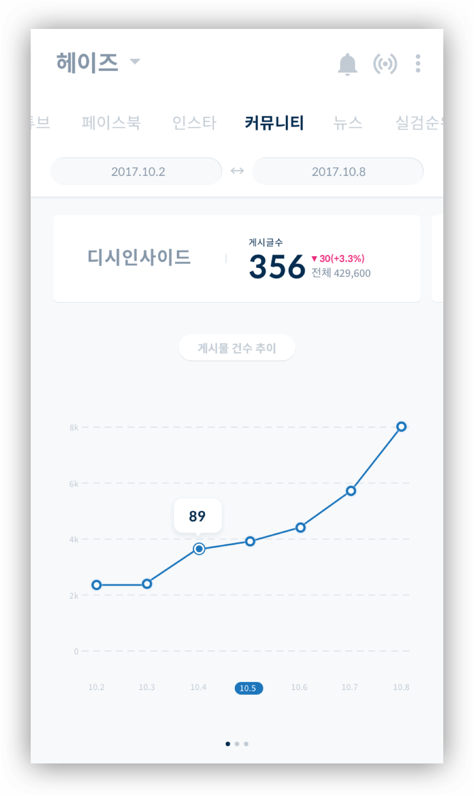
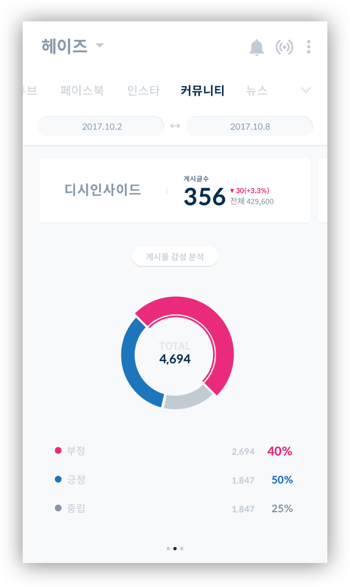
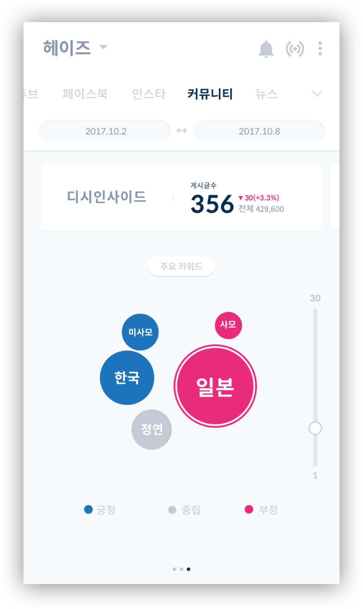
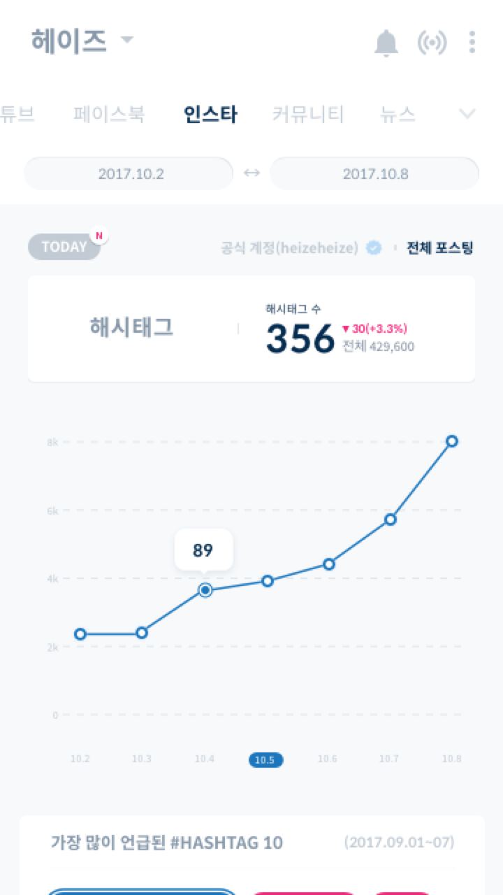
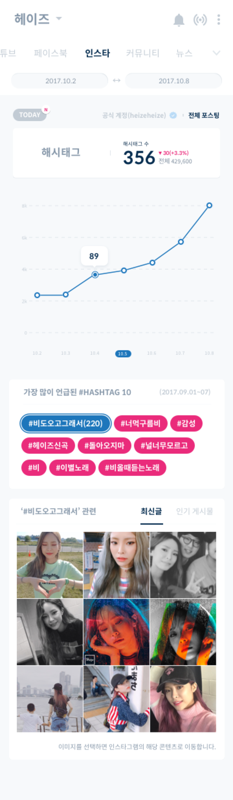

-
Cilent
Space oddity
MY ROLE
Brand concept, Prototyping, UI/UX Design
YEAR
2016-17
-
Peter is an web applications that provides real-time charts, playlists and social data about certain Korean musicians at your fingertips. It provided actionable music data in real time, which makes users aware of how their songs are consumed in SNS and web.
I focused on data visualization that helps musicians, who are not familar with graph and data information, understand their data more easily.
PRODUCT IDEATION
The picture that Peter is aiming for is that it provides useful data about the musicians online. By tracking all the data like soundchart, the latest news, the realtime hot issue on SNS in realtime, they can prepare better for the unexpected events. Peter provides the information in the right time.

THE HOME SCREEN
The home screen is designed to have everything in the app direcly accessible. Tha segmented bar has all categories, which makes artists reach the other data easily.
DATA VISULIZATION
Data visualization was the UI key feature that i focused on. The data should be readable and easy to understand at once.
Music streaming services at once
Soundcharts monitors across 6 music streaming services in real-time. It provides an overview for quick reporting as well as an in depth view, choose to dive in to access hourly ranking status and their rank in the service.

STATISTICS
The main feature of Peter is data crawling, which analyzes certain well-known website that has many news or contents about the musicians. Musicians can track of how their fans react to their newly released songs or anything about their activities and news.
-
Today Views
 -
Sentiment Analaysis
 -
Keywords

Peter crawls the data, the number of hashtags that are mentioned in Instagram and it provides the link that goes to the instagram page.
-
Hashtag
 -
TOP 10 Hashtags and more info


Peter gives the visualized data of the musicians’ official page in Facebook. It provides the sentiment analysis of the comments that are mentioned on the official page.